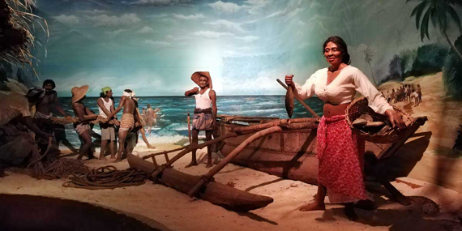

5. Maritime Archeology Museum |
|  |
Visiting Maritime Archeology Museum is one of the best things to do in Galle if you're a fan of museums and century-old objects. The museum houses models of boats, ships, and century-old items retrieved from shipwrecks.You will also find several maps and artilleries in the museum. The 2004 Tsunami has caused a significant amount of damage to the museum and its collection but with the help of donations, it was repaired and opened to visitors again in 2010. |
Distance from Katunayaka Airport : 150 km and it takes about 2 to 2 ½ hours |